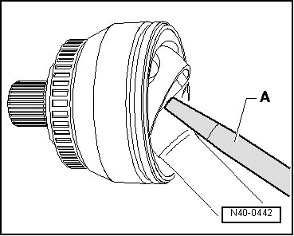
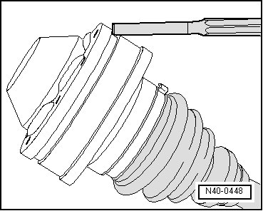
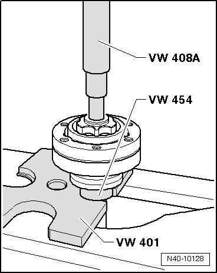
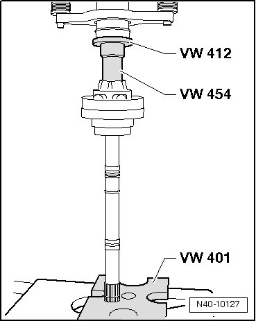
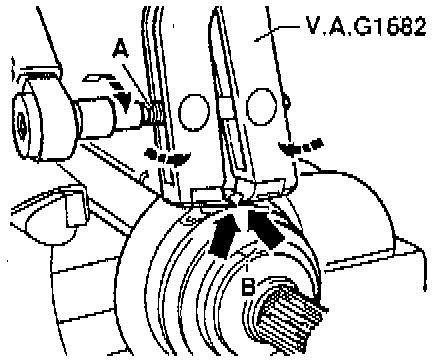

Front Suspension
Drive Axle
Special tools, testers and auxiliary items required
• Press piece (VW 454)
• Thrust plate (VW 401)
• Punch (VW 408 A)
• Torque wrench (VAG 1331)
• CV joint boot clamp tool (VAG 1682)
• Circlip pliers (VW 161 A)
• Punch (VW 412)
Disassembling
Pressing Off Outer Constant Velocity (CV) Joint

- Secure drive axle with protective covers in vise clamp.
- Remove both clamps from CV joint boot.
- Remove CV joint boot from outer CV joint.
- Drive CV joint from axle shaft using a drift - A -.
Drive must be applied exactly on star of CV joint.
Check outer CV joint. Refer to --> [ Outer Constant Velocity Joint, Checking ] Front Suspension.
Driving CV Joint On
- Drive onto axle shaft with plastic hammer until securing ring engages.
- Remove securing ring.
Removing Inner CV Joint
- Remove both clamps from CV joint boot.
- Pull off CV joint boot from inner joint.
- Drive off inner CV joint cover.

Remove circlip using circlip pliers (VW 161 A).
- Press off inner joint from axle shaft, as depicted in illustration. Hold axle shaft securely while doing so.

Inner CV joint cannot be disassembled for checking.
Assembling
- Press the inner CV joint onto the axle shaft as shown in the illustration.

- Install new circlip on axle shaft using circlip pliers (VW 161 A).
- Place new cover on inner joint.
- Attach CV joint boot clamp tool (VAG 1682) as shown in illustration. Be sure that edges of clamping pliers are seated in corners - arrows B - of hose clamp.

- Tension clamp by turning spindle with a torque wrench (do not tilt clamp tool).
• A stainless steel clamp must be used due to hardness of CV boot material (compared to rubber). This clamp can only be tensioned using CV joint boot clamp tool (VAG 1682).
• Tightening specification: 25 Nm.
• Use torque wrench with adjustment range 5 to 50 Nm (e.g. torque wrench (VAG 1331)).
• Be sure thread of spindle - A - of clamp tool moves freely. Grease with MOS 2 grease if necessary.
• If it does not move freely, e.g. due to dirt in thread, the required clamp tension will not be achieved at the specification.